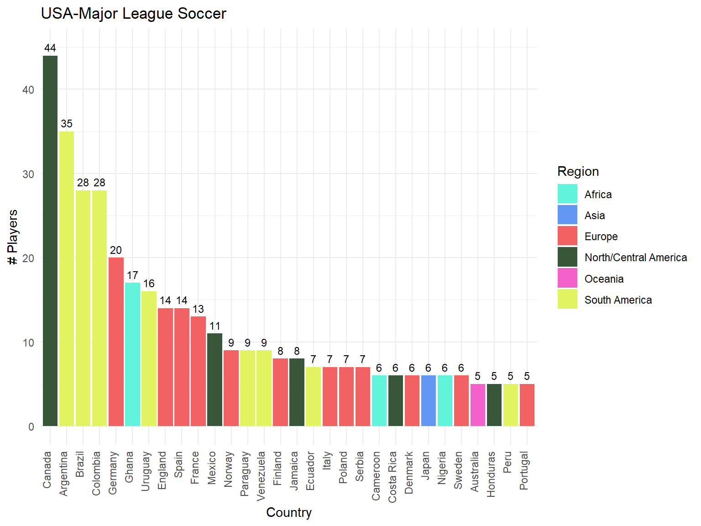

This section will present a quick overview about the number of players and teams for each league. There are 3 bar plots showing, respectively, the number of players/teams for each league and the average number of players per team for each league.
USA - Major League Soccer has more players than any other league, but it is explained once this league has more teams.
According to the ages’ distribution some leagues appear to be
similar, such as Primeira Liga (Portugal) and
Eredivisie (Netherlands) and Premier League
(England) and Bundesliga (Germany). To
evaluate if the players in those leagues present the same ages’
distribution, the pairwise Kolmogorov-Smirnov test will be
applied.
1 - The ages’ distribution of no league is normal, according to
KS-test
2 - The ages’ distribution are statistically different, according to
Kruskall Wallis test (p = 2.2e-16)
Considering \(\alpha = 0.05\) it is possible to assert that Bundesliga and Premier League has players from the same age as well as Saudi Pro League and Super Lig (Turkey) and also Serie A (Italy) and USA MLS. The pairs with \(p-value > 0.05\) have statistically the same players’ ages distribution.
The following heatmap presents the percentage of players of each
region in the leagues. The regions are the continents with the Americas
splited into South and North/Central.
To select only the foreign players, the players from the country the
league is from were excluded, for example, players from
Italy who play in Serie A were
excluded from this analysis.
| Players by league and region | ||||||
| Top 3 nationalities for each region | ||||||
| Liga | Europe | South America | North/Central America | Africa | Asia | Oceania |
|---|---|---|---|---|---|---|
| ENG-Premier League | France (6.04%) Netherlands (5.77%) Portugal (5.77%) |
Brazil (9.34%) Argentina (3.02%) Colombia (1.65%) |
Jamaica (1.37%) United States (1.37%) Mexico (0.82%) |
Ghana (2.47%) Nigeria (2.2%) Côte d'Ivoire (1.37%) |
Japan (1.37%) Türkiye (1.1%) Korea Republic (0.82%) |
Australia (1.37%) New Zealand (0.27%) |
| ESP-La Liga | France (10%) Portugal (4.55%) Belgium (3.64%) |
Argentina (11.36%) Brazil (6.36%) Uruguay (4.55%) |
Canada (0.91%) Dominican Republic (0.91%) United States (0.91%) |
Morocco (5%) Senegal (3.18%) Cameroon (1.82%) |
Türkiye (1.82%) Japan (0.91%) Georgia (0.45%) |
NA |
| ITA-Serie A | France (9.87%) Spain (6.13%) Belgium (3.73%) |
Argentina (6.67%) Brazil (4.53%) Colombia (1.87%) |
United States (1.33%) Canada (0.27%) Mexico (0.27%) |
Côte d'Ivoire (2.4%) Morocco (1.87%) Nigeria (1.87%) |
Türkiye (1.07%) Georgia (0.8%) Armenia (0.27%) |
Australia (0.53%) New Zealand (0.27%) |
| GER-Bundesliga | France (11.96%) Austria (9.78%) Denmark (5.07%) |
Brazil (3.26%) Argentina (0.72%) Ecuador (0.36%) |
United States (2.9%) Canada (0.36%) Costa Rica (0.36%) |
Guinea (1.45%) Mali (1.45%) Nigeria (1.45%) |
Japan (3.26%) Türkiye (2.17%) Korea Republic (1.45%) |
Australia (1.45%) |
| FRA-Ligue 1 | Portugal (4.3%) Netherlands (3.31%) Switzerland (2.98%) |
Brazil (4.64%) Argentina (1.66%) Colombia (0.99%) |
Canada (1.66%) United States (1.66%) Haiti (0.66%) |
Côte d'Ivoire (8.94%) Morocco (8.28%) Senegal (6.29%) |
Japan (1.32%) Georgia (0.66%) Jordan (0.33%) |
Australia (0.33%) New Zealand (0.33%) |
| USA-Major League Soccer | Germany (4.18%) England (2.92%) Spain (2.92%) |
Argentina (7.31%) Brazil (5.85%) Colombia (5.85%) |
Canada (9.19%) Mexico (2.3%) Jamaica (1.67%) |
Ghana (3.55%) Cameroon (1.25%) Nigeria (1.25%) |
Japan (1.25%) Israel (0.63%) Georgia (0.21%) |
Australia (1.04%) New Zealand (0.63%) |
| POR-Primeira Liga | Spain (13%) France (4.67%) Netherlands (2%) |
Brazil (31.67%) Argentina (4%) Uruguay (2.67%) |
Costa Rica (1.33%) Canada (0.33%) Curacao (0.33%) |
Angola (2.33%) Cabo Verde (2.33%) Guinea-Bissau (1.33%) |
Türkiye (1.67%) Japan (1%) Cyprus (0.33%) |
NA |
| SAU-Pro League | Portugal (5.88%) Spain (5.88%) France (4.71%) |
Brazil (15.29%) Uruguay (2.35%) Argentina (1.76%) |
Jamaica (1.18%) Canada (0.59%) Curacao (0.59%) |
Morocco (7.06%) Algeria (4.12%) Cameroon (2.35%) |
Iraq (1.18%) Armenia (0.59%) Korea Republic (0.59%) |
Australia (0.59%) |
| NED-Eredivisie | Belgium (10.77%) Denmark (5.77%) France (5.38%) |
Suriname (3.08%) Brazil (1.92%) Argentina (1.54%) |
United States (3.08%) Curacao (2.69%) Mexico (0.77%) |
Morocco (4.62%) Algeria (1.15%) Ghana (1.15%) |
Japan (2.31%) Türkiye (1.92%) Indonesia (1.54%) |
Australia (0.77%) New Zealand (0.77%) |
| TUR-Süper Lig | France (6.67%) Portugal (6.67%) Bosnia and Herzegovina (3.53%) |
Brazil (7.84%) Argentina (0.78%) Uruguay (0.78%) |
Costa Rica (0.39%) Haiti (0.39%) Honduras (0.39%) |
Nigeria (5.1%) Ghana (3.92%) Senegal (3.53%) |
Iran (0.78%) Kazakhstan (0.78%) Uzbekistan (0.78%) |
NA |
In this sections, the foreign players of each country is presented on a bar chart for each league. It may be used to illustrate the table above. In the following charts, countries with less than 5 players in a league are not displayed, so it may differ slightly from the table above.

The following plots aims to show the payers’ wages and values
distribution for each league.
Attention this values are according to the SOFIFA api,
which is based on the Fifa game (EA FC), then, the values may not
reflect the real value/wage of some players. For more accurate values,
consult transfermarkt.